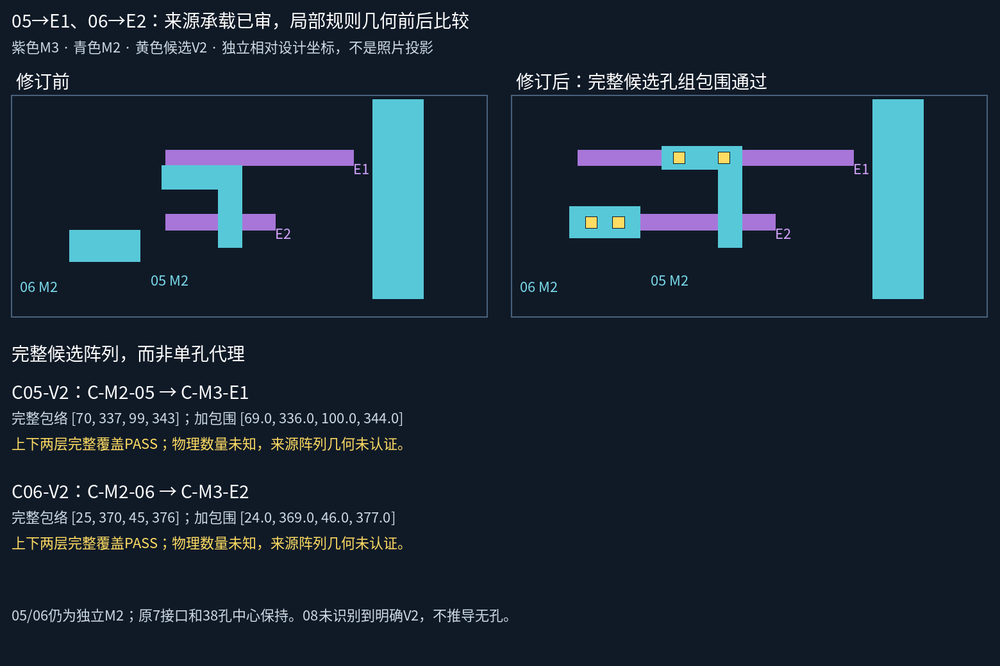

用户原话：身份车承载关系正确。按已交付两问记录05→V2→E1、06→V2→E2，保留原文。身份与承载不再待审批。实际孔数、精确孔心、照片投影及新几何资格不随批准扩大。

05、06的短头分别移到E1/E2的y站位；E1/E2共同的左侧来源范围入口在局部设计中统一到x25，保留E1较长、E2较短的关系和右端位置。4条金属的原生锚点均不变，不把有限范围边界当物理终点。其余26金属、旧7接口和38设计孔完全保持，05/06同层仍不相接。
| 孔组 | 已审承载 | 完整候选包络 | 包围 |
|---|---|---|---|
| C05-V2 | C-M2-05 → C-M3-E1 | [70, 337, 99, 343] | 整个包络及逐孔均通过 |
| C06-V2 | C-M2-06 → C-M3-E2 | [25, 370, 45, 376] | 整个包络及逐孔均通过 |
相对设计预算：孔径6、最小孔间距3、每侧包围1。两孔只是工作假设，检查整个声明包络及每一个孔。05同范围三孔备选可行；06同范围三孔因间距不足被质量门拒绝，不为它降低规则。若后续来源支持更多孔，需要重新恢复完整孔组范围，不能将当前PASS解释为物理数量正确。
30金属，9个已审承载接口，42个设计候选孔。身份/承载无待答问题。08仍在原范围内未识别明确V2，物理无孔、范围外返回及完整网络未知。
完整走廊工作图及图层切换 · 原生宽范围与4倍局部 · 08来源上下文
自动网表导出与正式几何采用关闭，真实PDK与来源阵列精度未认证。README/site/gh-pages保持。本次不重复询问已有裁决。